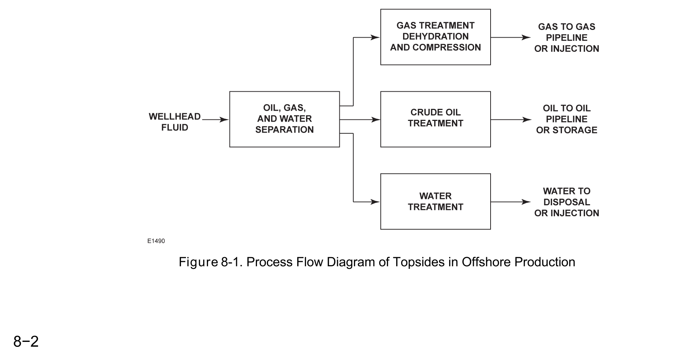

Facility Design Tradeoffs
Onshore

Erosive, high-pressure raw wellhead duty drives the design
Offshore

Weight, footprint, and access drive the design instead
Fisher Control Valve Sourcebook — Oil & Gas (© 2013 Fisher), Chapter 7 "Onshore Oil and Gas Production," Figure 7-1 (drawing number E1481, printed p. 7-1) — "Figure 7-1. Production Process Flow Diagram." — used directly. Component Index: ogas-cmp-onshore-production-process-flow, ogas-cmp-offshore-topsides-process-flow.